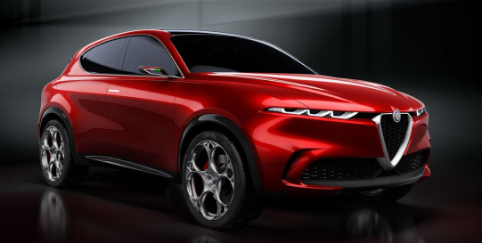

The all-new 2022 Alfa Romeo Tonale looks to inject some Italian blood into the fray of subcompact luxury crossovers.
With curvy bodywork that's accentuated by Alfa's sharp-nosed face, the Tonale is as handsome as they come.
In addition, it should offer a plug-in-hybrid powertrain with a short electric-driving range.
Although that and many other facets about the small SUV are still unknown, the company has promised that it will continue Alfa's tradition of driving enjoyment.
Throw in a high seating height and an all-wheel-drive option that consumers crave—as well as the potential for a high-powered Quadrifoglio model—and the 2022
Tonale is set to be a compelling new entry.